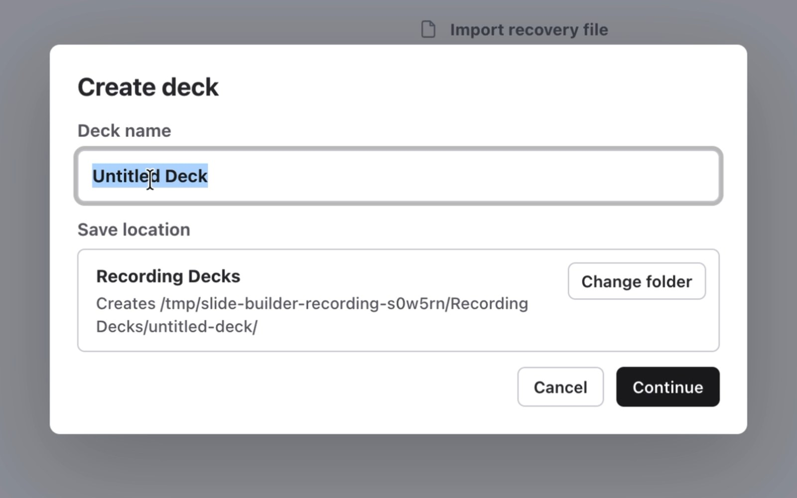
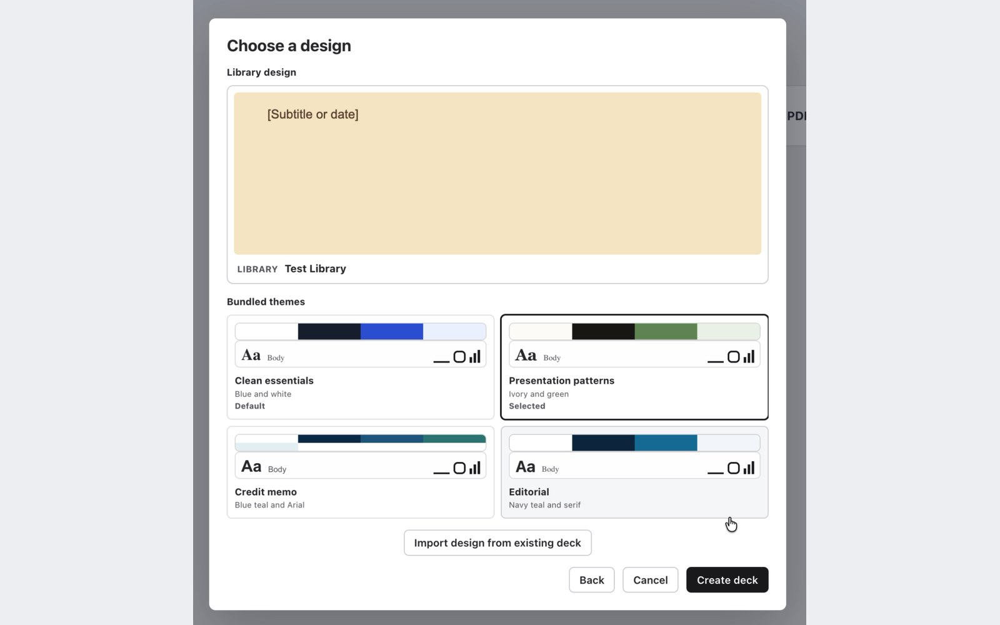
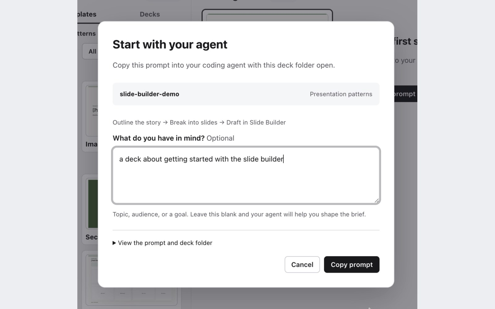
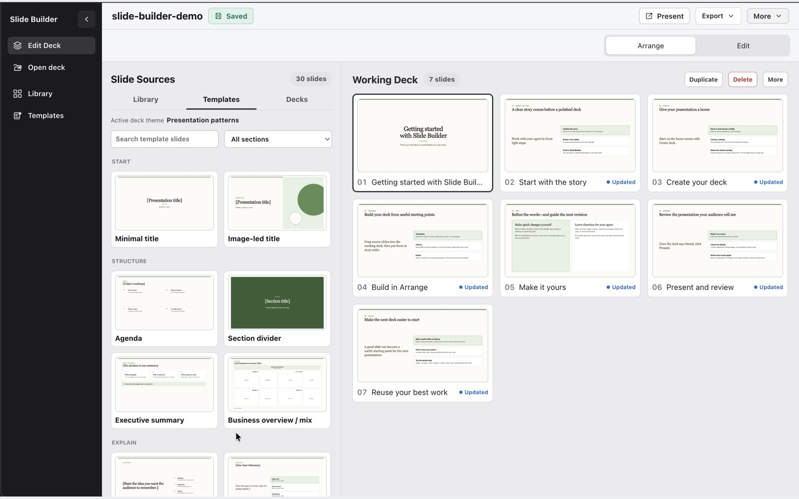
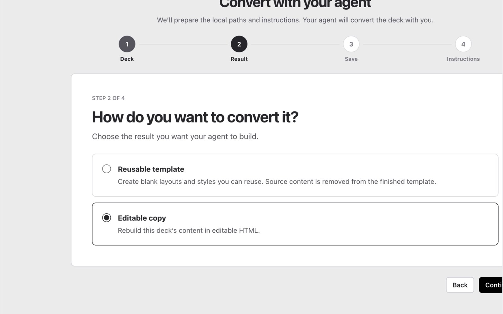
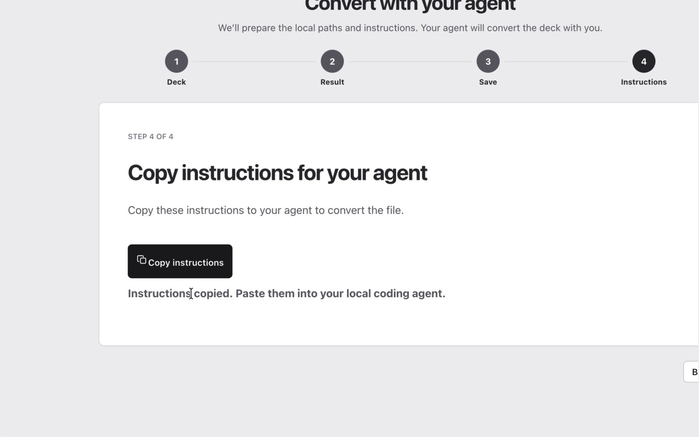
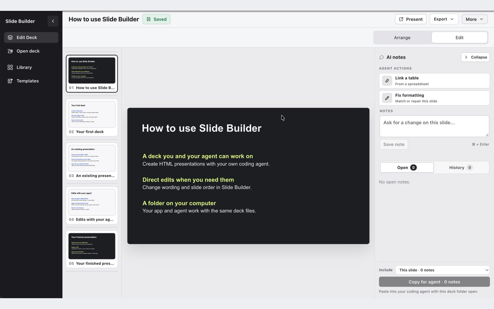
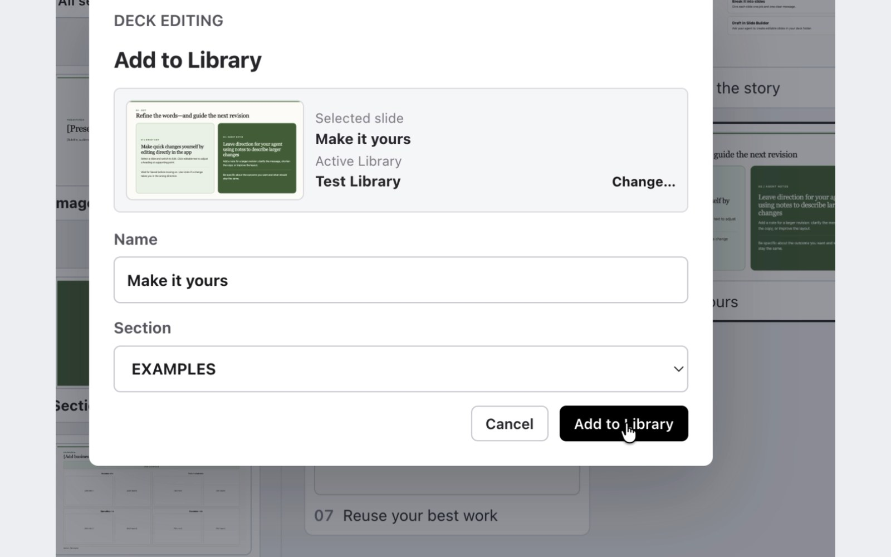
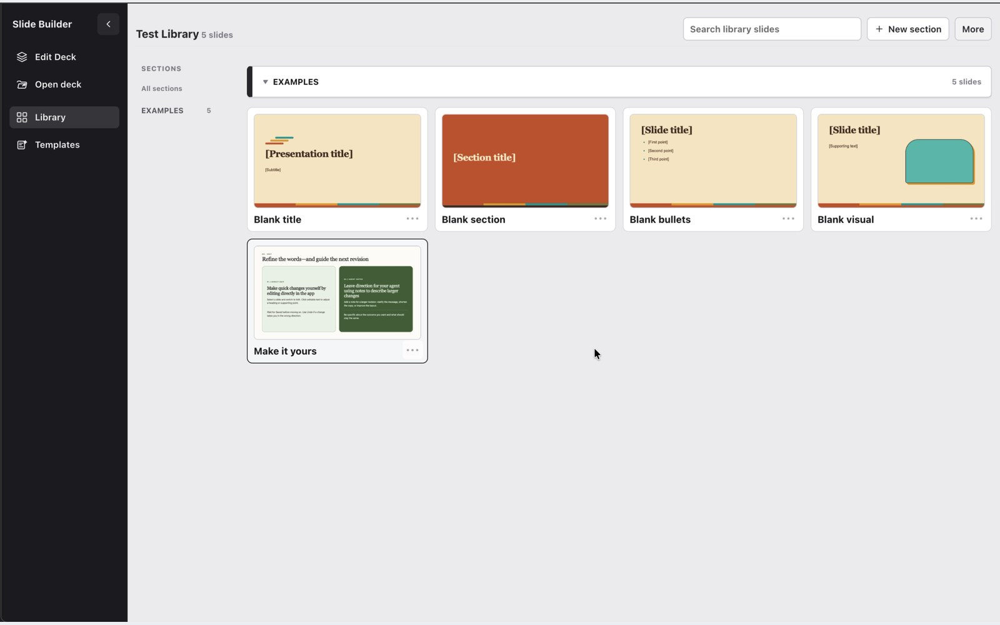
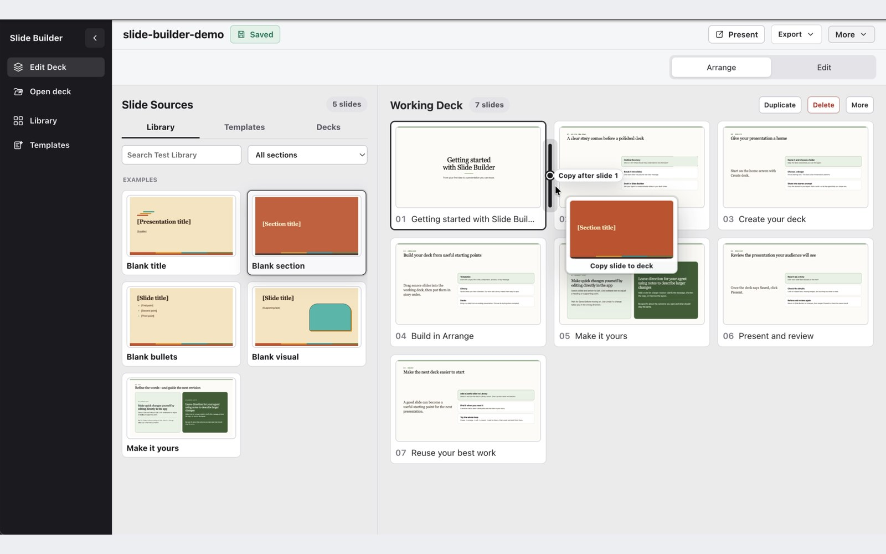

1 Create a deck
Choose Create deck. Name it and choose a folder you can also open in your coding agent. Keep it outside the app’s installation folder.

Collaborate on HTML slides directly with your agent. Edit words, reorder slides, and leave notes for your agent.
Bring your own coding agent, such as Codex, with access to your deck folder. Type your prompts in that separate agent, then review and edit the deck here.
No account required.
Works with any coding agent: your agent drafts the slides, you review and edit them in Slide Builder. Create a deck from a template or a conversion, edit and refine it, and build a Library of favorites.
How it works: Slide Builder works with any coding agent. Your agent drafts the slides; you review and edit them in Slide Builder. Work in your preferred AI agent and collaborate in Slide Builder, both from the same deck folder.
Create an HTML deck, option 1, start from a template: pick a design in Slide Builder, then Copy starter prompt. Paste it into your agent and send it. The agent replies with a plan for the slides, and the draft opens in Slide Builder, ready to edit: a bar sweeps from the one-slide starter to the seven-slide draft.
Option 2, convert a PowerPoint or PDF: Slide Builder generates instructions your agent can use to convert it. Paste them into your agent and send them; file, format and destination are included. The agent replies that it will stage a sample slide for review first, and the converted deck opens in Slide Builder as editable HTML. Already have HTML? Just open the folder.
Then edit directly in the app, with precise edits under your control: click any text and type. Leave a note for bigger changes, typed and saved on the slide; your agent reads it from the deck folder. Send the note to your agent with Copy for agent; it replies that it has updated the slide, and a bar sweeps from the slide before to the slide after. Drag in slides from templates or other decks, drag to reorder, then click Present to play the deck full screen, or export a PDF.
Build a Library of favorites over time: Add to Library saves a slide you like, with a name and a section; Manage Library shows it building up; and from any deck, search the Library and drag a favorite in.
Get Slide Builder. No account required. Fully local. Use any coding agent. Download for Mac or Windows. Agent waiting time is shortened where noted, and the agent chat is re-created from a real Codex session.
Mac: Open the download and drag Slide Builder into Applications.
Windows: Open the MSIX download and choose Install.
Open the app and choose Start Slide Builder. Use Chrome or Edge for editing.
Save decks in your own folder, outside the app’s installation folder.
Slide Builder edits HTML decks saved on your computer. Work in your preferred coding agent, such as Codex, to draft or revise the deck files, and collaborate on them in Slide Builder. Both use the same deck folder.
A Library is optional; create one when you have a slide worth keeping. This is a workspace for you and your agent; live multiplayer editing is not built in. Select a screenshot to enlarge it.
Choose a built-in design, copy the starter prompt into your agent, and it drafts the slides into your deck.
Choose Create deck. Name it and choose a folder you can also open in your coding agent. Keep it outside the app’s installation folder.

Pick a bundled theme, then choose Create deck. The theme gives you layouts to add from Templates or use as a starting point for your agent.

Your new deck opens with a Draft your first slides card. Choose Copy starter prompt, add a line about what you have in mind if you like, then Copy prompt. Paste it into your coding agent with the deck folder open. The prompt names the deck, its folder and its design.

Return to the same deck in Slide Builder after your agent saves. The draft is there, ready to edit: check the slides, change words directly, and save notes for the next pass.

Your agent needs permission to read and edit the deck folder. If it asks a question first, answer it; the prompt tells it to ask only when something essential is missing.
For a PowerPoint or PDF, Slide Builder generates instructions your agent can use to convert it to HTML. If your deck is already HTML, open its folder directly.
Choose Convert PDF or PPTX and select your file. Choose Editable copy to keep working on its content, or Reusable template for blank layouts. Choose where to save the result.

Choose Copy instructions, then paste them into your separate coding agent. The instructions include the source file and destination folder. Let the agent read the file and perform the conversion.

Your agent may ask you to check a sample slide first; then it finishes the deck in the folder you chose. Open it with Open existing deck if it is not already open, and check every slide before editing.

Choose Open existing deck, then select the folder containing the deck’s HTML file. Keep its styles, images, and other assets together in that folder.
If files look greyed out, the picker may be asking for a folder. PowerPoint and PDF files use the conversion path above.
Save reusable slides over time. A Library is one folder on your computer that Slide Builder remembers; create or connect one from Library when you have a slide worth keeping.
Select a slide in the working deck, open its menu and choose Add to Library. Name it, pick a section, then Add to Library. The confirmation offers View in Library.

Library shows every saved slide by section, with search. Rename, move or delete slides there, and add sections as the collection grows.

In Edit Deck, open the Library tab, search a name, and drag the card into the working deck. The Library keeps its copy.

The app tells you when an update is available. Choose Download update, then Restart and update when you’re ready. Choose Later to keep working.
Report a problem or suggest an improvement with a short Google Form. Tell us what happened and, if you know it, your app version and whether you use Mac or Windows.
If the app offers Download support logs, open the downloaded slide-builder-support.json in a text editor and paste its contents into the form’s optional support-log field. Review it before sending. Please don’t send a recovery file or your deck contents.
No sign-in required. Responses are not posted publicly. Leave an email if you’d like a reply; it won’t sign you up for updates. Please leave out private decks, client information, and sensitive details. Replies aren’t guaranteed.
Save your work if you can. If saving fails, keep the tab open and copy any unsaved text or notes before restarting.
Once your work is saved, quit and reopen Slide Builder. For folder editing, use Chrome or Edge and allow access to the deck folder when asked.
If an update caused the problem, check the release and recovery notes. Keep your deck and Library folders when replacing the app. Windows recovery uses a newer release; use an earlier Mac installer only when the notes recommend it.
The installers use Apple’s and Microsoft’s standard developer signing processes. macOS and Windows verify the publisher and check that the signed software has not been altered. The Mac app is also notarized by Apple, which checks it for known malicious software.
Publisher: Claire Morrison.
If you choose to sign up for email updates, your email is stored in Google Forms and used to manage the mailing list. Signing up is optional and separate from using the app.
Slide Builder runs on your computer and saves your edits to local files. It does not upload your decks to a Slide Builder service.
The app connects online to check for updates and downloads them when you choose. Online content in a deck, such as fonts or images, may contact its provider. Your coding agent runs separately and uses its own data-sharing settings.
A native launcher, a bundled Node.js runtime, and a React interface served locally through Vite in your browser, plus libraries for PDF export and file handling. You do not need to install Node.js separately.
The packaged JavaScript and dependency files can be inspected. Installer checksums let you verify that your download matches the released file.